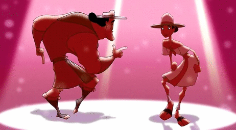
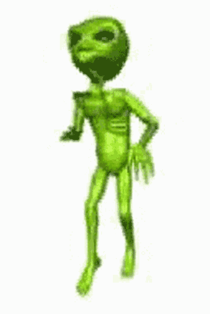
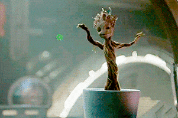

Kronk
El torpe ayudante de Yzma es todo un hallazgo en los personajes de Disney. Torpe, bonachón y musculoso, a Kronk no se le ocurriría hacer daño a nadie, pero se ve atrapado en los planes de Yzma una y otra vez. Aunque, en vez de ayudarla, más bien la incordia.
Ricardo Milos
El sujeto en cuestión es conocido en el bajo mundo del entretenimiento para adultos como Ricardo Milos, y el video de su peculiar baile -donde sólo aparece con una tanga de la bandera de los Estados Unidos- fue subido hace 9 años a un sitio pornográfico llamado “Jock Butt”.

Marcianito 100% real no feik
Marcianito 100% real no fake es un video de youtube de un marciano bailando cumbia. La canción es 'Nunca me Faltes' de Antonio Rios.

Groot
Groot es un superhéroe ficticio que aparece en los cómics estadounidenses publicados por Marvel Comics. Una criatura extraterrestre, similar a un árbol sensible, el Groot original apareció por primera vez como un invasor que pretendía capturar humanos para la experimentación. Aunque fue presentado originalmente como un villano, el personaje fue reconfigurado como un ser noble y heroico en 2006.
Alvarito
Álvaro Uribe Vélez (Medellín, 4 de julio de 1952) es un abogado y político colombiano.
Presidente de Colombia en los períodos 2002-2006 y 2006-2010.
Es considerado como 'El Gran Colombiano' y también el mejor presidente que ha tenido Colombia duelale a quién le duela.